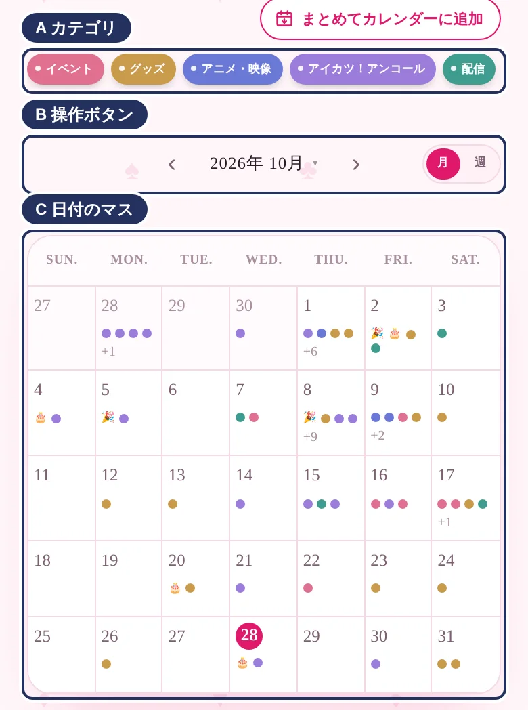
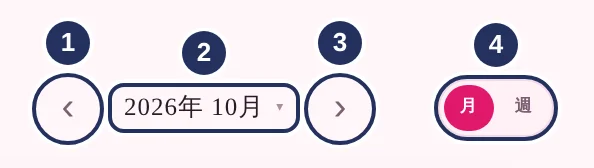
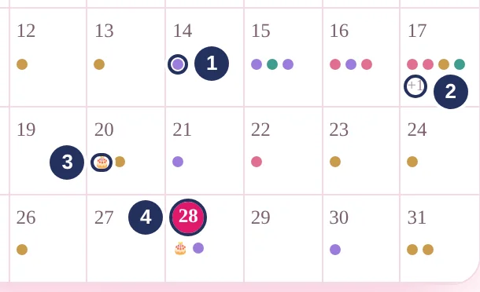
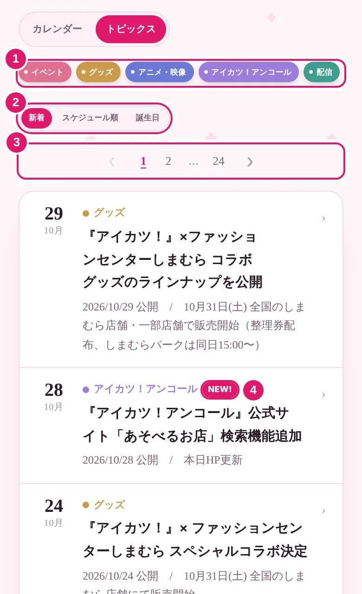
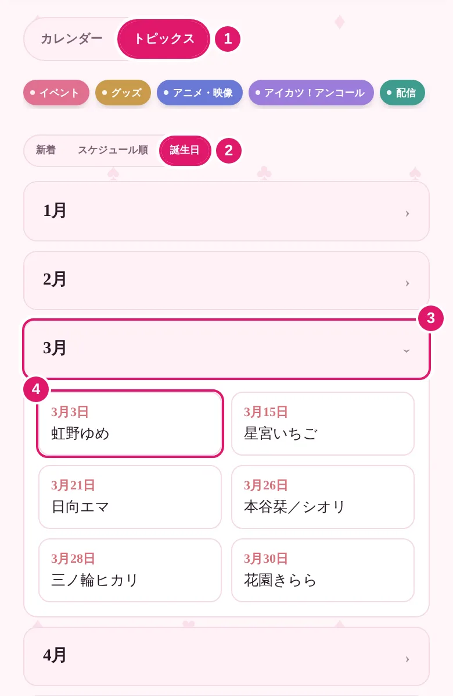
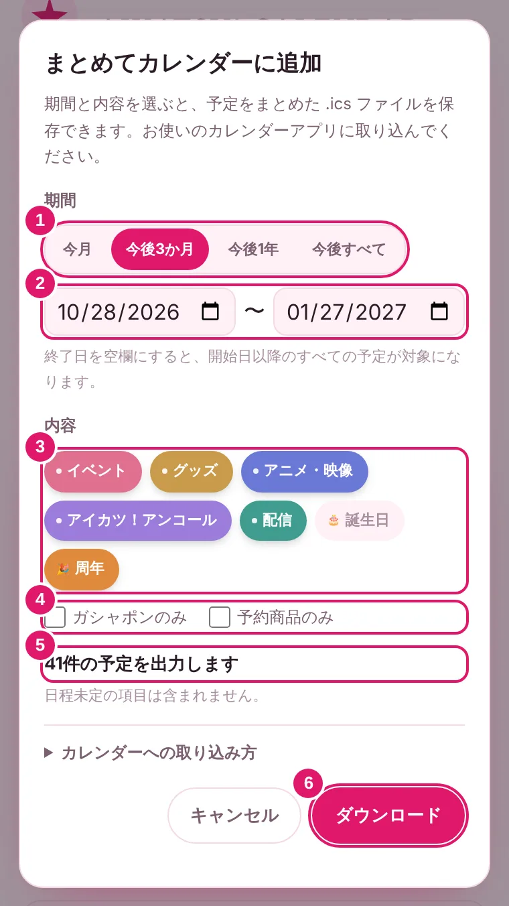

アイカツカレンダーの使い方
1カレンダー
カレンダー画面は、大きく3つの部分に分かれています。

Aカテゴリ
押すと、その種類の予定だけを表示します。複数選べて、もう一度押すと解除されます。
B操作ボタン

- 1前の月へ
- 2押すと年月を選べます
- 3次の月へ
- 4月表示／週表示の切り替え
C日付のマス

- 1点の色が予定の種類です イベント グッズ アニメ・映像 アイカツ！アンコール 配信
- 2表示しきれない予定の件数
- 3🎂は誕生日、🎉は周年
- 4今日
予定を確認
カレンダーの日付をタップすると、その日の予定を確認できます。公式のリンクへのアクセスも可能です。
自分のカレンダーへ追加
カレンダーマークを押すと、Googleカレンダーなど自身のカレンダーに予定を追加できます。期間・ジャンルなどを指定してまとめて追加することも可能です。
まとめて追加はこちら。
2トピックス
情報をリストで見られます。

- 1カテゴリで絞り込み
- 2新着順／スケジュール順の切り替え
- 3ページの切り替え
- 43日以内の新しい情報
3誕生日
キャラクターの誕生日を月ごとに確認できます。メニューの「誕生日」からも直接開けます。

- 1「トピックス」を開く
- 2「誕生日」を選ぶ
- 3月を押すと、その月の誕生日が開きます
- 4名前を押すと、公式のキャラクター紹介ページが開きます
今月はピンクで表示され、今日が誕生日のキャラクターには🎂が付きます。
4まとめてカレンダーに追加
期間と内容を選んで、予定をまとめて自分のカレンダーに追加できます。

- 1期間を選ぶ
- 2日付を自由に指定（終了日が空欄なら、それ以降すべて）
- 3追加するカテゴリを選ぶ
- 4ガシャポン・予約商品だけに絞る
- 5追加される件数
- 6ファイル（.ics）を保存
保存したファイルの取り込み方
- iPhoneファイルを開いて「すべてを追加」
- Googleカレンダーパソコンで「設定 → インポート/エクスポート」から読み込み（スマホアプリは非対応）
- Outlook「予定表を追加 → ファイルからアップロード」
※取り込んだ予定は、あとからこのサイトで情報が変わっても自動では更新されません。